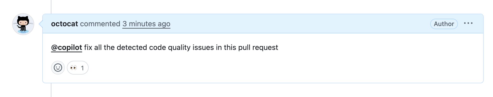

Catch quality issues before they reach your default branch and fix them with Copilot Autofix and Copilot cloud agent.
Note
GitHub Code Quality is currently in public preview and subject to change.
During public preview, Code Quality will not be billed, although Code Quality scans will consume GitHub Actions minutes.
This tutorial shows you how to work with GitHub Code Quality on pull requests to identify code quality issues that your changes may otherwise inadvertently introduce, and how to address and resolve code quality findings with Copilot Autofix and Copilot cloud agent.
Catching code quality issues early keeps your team's codebase in shape. GitHub Code Quality checks your code for:
When you open a pull request, GitHub Code Quality uses CodeQL to automatically scan your changes for quality issues like those described above.
The results of the CodeQL scan are reported as comments on your pull request, left by the github-code-quality[bot]. Each comment corresponds to a specific code quality problem that was detected in your changes, and comes with a suggested autofix.
Comments are labeled by severity (Error, Warning, Note), so you can see which findings are the most critical to address.
Scan through the comments and identify the findings that have the highest severity level ("Error") first.
If there are no "Error" findings, look for findings of the next severity level ("Warning"), and so on.
High severity findings indicate more serious code quality issues that are more likely to introduce reliability or maintainability problems in your codebase. By resolving high severity findings, you're doing the most impactful work to maintain the quality of your team's code.
Note
A repository administrator may have set a code quality gate that blocks merging on your pull request, if the pull request contains Code Quality findings of a particular severity level or above. See Resolving a block on your pull request.
Comments on the pull request include a suggested autofix that you can commit directly to your pull request. Carefully review the suggested autofix for logic, security, and style, then click Commit suggestion.
You don't need a Copilot license to apply these suggestions.
Alternatively, if you have a Copilot license, you can delegate the remediation work to Copilot cloud agent. Comment on the pull request mentioning @Copilot and request that Copilot fix the detected issues.

Copilot responds with an eyes emoji (👀) to your comment, starts a new agent session, and opens a pull request with the necessary fixes.
You can track Copilot cloud agent's work:
You need a Copilot license to invoke Copilot cloud agent.
Sign up for Copilot
You can dismiss a finding if it isn’t relevant or actionable in the context of your codebase. Common reasons to dismiss a finding include:
Dismissing irrelevant alerts keeps your quality checks focused on meaningful issues.
After fixing or dismissing findings, push your changes to the branch associated with your pull request. GitHub Code Quality will automatically re-scan your changes and update the comments on your pull request accordingly.
Anyone with write access can view the overall code quality ratings for a repository, which summarize the state of the code's reliability and maintainability across the default branch.
To view your repository's ratings, navigate to the Security and quality tab of your repository, expand Code quality in the sidebar, then click Standard findings.
By resolving issues before merging your pull request, you've directly contributed to maintaining these ratings.